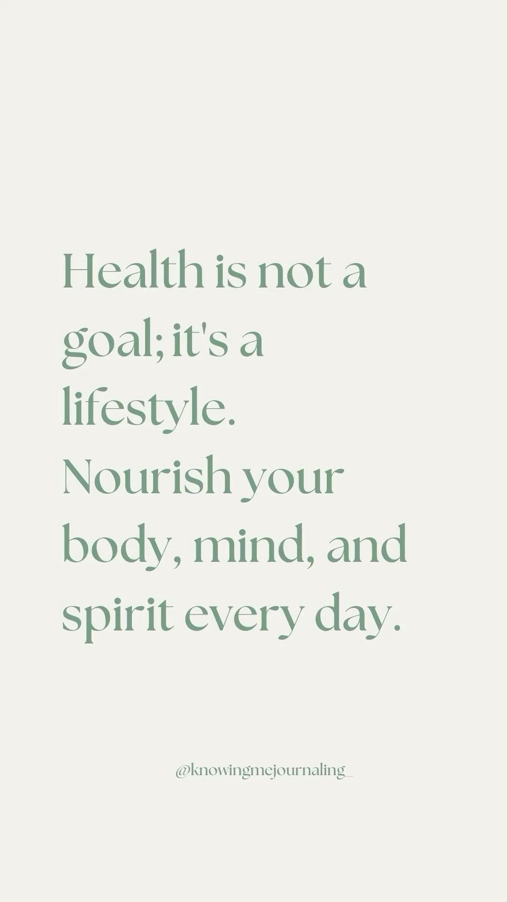

In today’s fast-paced world, people are overwhelmed with information—but not all of it is accurate, accessible, or actionable. We created this health and wellness site with a simple but powerful mission: to empower individuals to take control of their health through understanding, not confusion.  Take our Health and Wellness Quiz below for some basic knowledge!